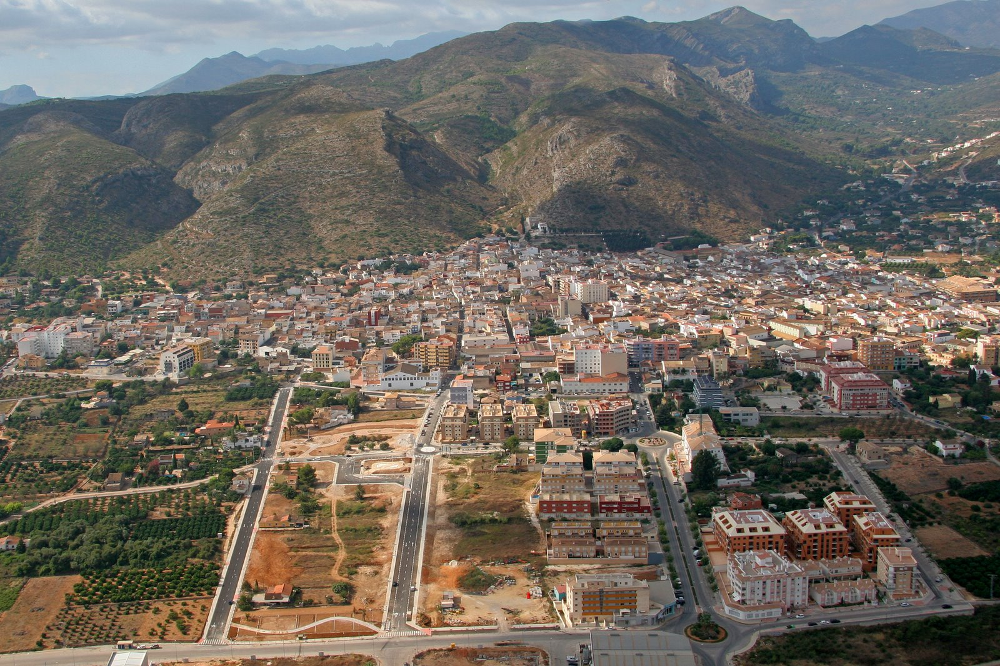
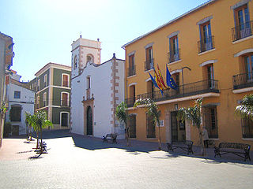
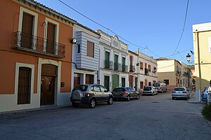
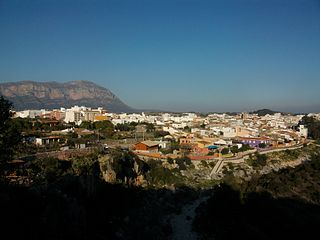

</head>
<body>
    <div class="cabecera">
        <div class="Titulo"><h1 class="Nombre_Pagina">Menú principal</h1></div>
        <div class="MenuIcono"></div>
        <div class="sepaCabCont">
            <div class="linea"></div>
        </div>
    </div>
    <div class="content">
        <div class="pueblo1 puebloFondo">
            <div class="Nombre_pueblo">Pedreguer</div>
            <div class="img_pueblo"><div class="tamaño_foto_pueblo"></div></div>
        </div>

        <div class="sepaCab">
            <div class="linea"></div>
        </div>

        <div class="pueblo2 puebloFondo">
            <div class="Nombre_pueblo">Ondara</div>
            <div class="img_pueblo"><div class="tamaño_foto_pueblo"></div></div>
        </div>

        <div class="sepaCab">
            <div class="linea"></div>
        </div>

        <div class="pueblo3 puebloFondo">
            <div class="Nombre_pueblo">La Llosa de Camatxo</div>
            <div class="img_pueblo"><div class="tamaño_foto_pueblo"></div></div>
        </div>

        <div class="sepaCab">
            <div class="linea"></div>
        </div>

        <div class="pueblo4 puebloFondo">
            <div class="Nombre_pueblo">Gata de Gorgos</div>
            <div class="img_pueblo"><div class="tamaño_foto_pueblo"></div></div>
        </div>
    </div>
</body>
</html>
